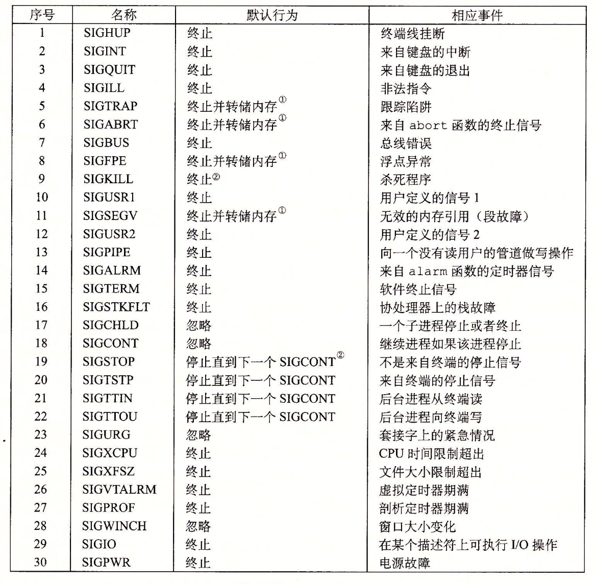
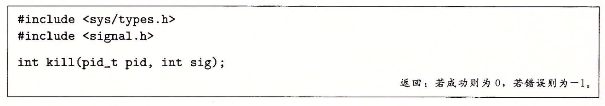
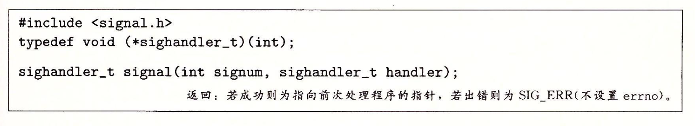

<!DOCTYPE html>
<html lang="en">

	<head>
		<title> Bookread &middot; trainyao.github.io </title>

		<meta http-equiv="content-type" content="text/html; charset=utf-8">
<meta name="viewport" content="width=device-width, initial-scale=1.0">
<meta name="generator" content="Hugo 0.161.1">


<script src="https://code.jquery.com/jquery-3.1.1.min.js"   integrity="sha256-hVVnYaiADRTO2PzUGmuLJr8BLUSjGIZsDYGmIJLv2b8="   crossorigin="anonymous"></script>


<link href="https://cdn.jsdelivr.net/npm/bootstrap@5.0.1/dist/css/bootstrap.min.css" rel="stylesheet" integrity="sha384-+0n0xVW2eSR5OomGNYDnhzAbDsOXxcvSN1TPprVMTNDbiYZCxYbOOl7+AMvyTG2x" crossorigin="anonymous">
<script src="https://cdn.jsdelivr.net/npm/bootstrap@5.0.1/dist/js/bootstrap.bundle.min.js" integrity="sha384-gtEjrD/SeCtmISkJkNUaaKMoLD0//ElJ19smozuHV6z3Iehds+3Ulb9Bn9Plx0x4" crossorigin="anonymous"></script>


<link rel="stylesheet" href="https://use.fontawesome.com/releases/v6.7.1/css/all.css" integrity="sha384-QI8z31KmtR+tk1MYi0DfgxrjYgpTpLLol3bqZA/Q1Y8BvH+6k7/Huoj38gQOaCS7" crossorigin="anonymous">


<link rel="stylesheet" href="https://trainyao.github.io/css/nix.css">


<link href="https://fonts.googleapis.com/css2?family=Inconsolata&family=Open+Sans:ital,wght@0,400;0,700;1,400;1,700&family=Concert+One&display=swap" rel="stylesheet">


	</head>

	<body>
		<header>
	<nav class="navbar navbar-dark bg-dark fixed-top navbar-expand-lg font-header">
		<div class="container-fluid">
			<a class="navbar-brand" id="green-terminal" href='https://trainyao.github.io/'>
				trainyao@home ~ $
			</a>
			<button type="button" class="navbar-toggler" data-bs-toggle="collapse" data-bs-target="#navbar-collapse-1" 
					aria-controls="navbar-collapse-1" aria-expanded="false">
				<span class="visually-hidden">Toggle navigation</span>
				<span class="navbar-toggler-icon"></span>
			</button>

			
			<div class="collapse navbar-collapse" id="navbar-collapse-1">
				<ul class="nav navbar-nav ms-auto">
					<li class="nav-item">
						<a class="nav-link" href='https://trainyao.github.io/'>
							/home/trainyao</a>
					</li>
					
					
					
					<li class="nav-item dropdown">
						
						<a class="nav-link" href="https://trainyao.github.io/post/">~/post</a>
						
					</li>
					
					
					<li class="nav-item dropdown">
						
						<a href="#" class="nav-link dropdown-toggle" data-bs-toggle="dropdown" role="button" 
								aria-haspopup="true" aria-expanded="false">category <span class="caret"></span></a>
						<ul class="dropdown-menu dropdown-menu-dark dropdown-menu-end">
							
							<li>
								<a class="dropdown-item" href="https://trainyao.github.io/categories/ai/">~/ai</a>
							</li>
							
							<li>
								<a class="dropdown-item" href="https://trainyao.github.io/categories/kubernetes/">~/kubernetes</a>
							</li>
							
							<li>
								<a class="dropdown-item" href="https://trainyao.github.io/categories/devops/">~/devops</a>
							</li>
							
							<li>
								<a class="dropdown-item" href="https://trainyao.github.io/categories/istio/">~/service mesh/istio</a>
							</li>
							
							<li>
								<a class="dropdown-item" href="https://trainyao.github.io/categories/gloo/">~/service mesh/envoy/gloo</a>
							</li>
							
							<li>
								<a class="dropdown-item" href="https://trainyao.github.io/categories/mosn/">~/service mesh/mosn</a>
							</li>
							
							<li>
								<a class="dropdown-item" href="https://trainyao.github.io/categories/skynet/">~/skynet</a>
							</li>
							
							<li>
								<a class="dropdown-item" href="https://trainyao.github.io/categories/%E8%84%91%E6%B4%9E/">~/脑洞</a>
							</li>
							
							<li>
								<a class="dropdown-item" href="https://trainyao.github.io/categories/%E5%85%B6%E4%BB%96/">~/其他</a>
							</li>
							
							<li>
								<a class="dropdown-item" href="https://trainyao.github.io/categories/%E7%BF%BB%E8%AF%91/">~/翻译</a>
							</li>
							
							<li>
								<a class="dropdown-item" href="https://trainyao.github.io/categories/kubernetes-%E6%9D%83%E5%A8%81%E6%8C%87%E5%8D%97/">~/读书笔记/kubernetes 权威指南</a>
							</li>
							
							<li>
								<a class="dropdown-item" href="https://trainyao.github.io/categories/%E6%B7%B1%E5%85%A5%E7%90%86%E8%A7%A3%E8%AE%A1%E7%AE%97%E6%9C%BA%E7%B3%BB%E7%BB%9F/">~/读书笔记/深入理解计算机系统</a>
							</li>
							
						</ul>
						
					</li>
					
				</ul>
			</div>
		</div>
	</nav>
</header>

		<div class="flex-wrapper">
			<div class="container wrapper">
				<div class="row">
					<div class="col-xs-12 text-center">
						<h1 id=>Bookread</h1>
					</div>
				</div>
				<ul id="post-list">
	
	<li>
		<div class="post-list-item">
			<div class="post-header">
				<h4 class="post-link"><a href="https://trainyao.github.io/post/bookread/kubernetes_the_definitive_guide/kubernetes_architecture/">kubernetes是怎么工作的以及其架构</a></h4>
				<h4 class="post-date">2018-09-16</h4>
			</div>
			<div class="post-summary"><p><p>本文简单概括了 kubernetes 里有什么组件，以及它们是如何工作的。</p>
<h1 id="一kubernetes-的组件和架构">一、kubernetes 的组件和架构</h1>
<p>一个	kubernetes 集群包含两部分：master 节点和 node 节点。master 节点负责接收管理员对于 kubernetes 资源对象的修改，并根据这些修改，对 node 节点进行配置和调度。node 节点是 kubernetes 集群内的计算节点，负责给部署在上面的业务应用提供计算以及储存能力。</p>
<p>kubernetes 里有以下组件：Kubernetes API Server、Controll Manager、Scheduler、kubelet 和 kube-proxy。</p>
<p>其中，Kubernetes API Server、Controll Manager、Scheduler 运行在 master节点上。而 kubelet 和 kube-proxy 运行在 node 节点上。</p>
<p>这些组件分别负责 kubernetes 运行的不同职责：</p>
<ul>
<li>
<p>Kubernetes API Server：kubernetes 集群的管理入口，它提供 HTTP REST 接口给 kubernetes 用户进行集群的配置，这些配置将会保存在 master 节点运行的 etcd 里面，供其他组件查阅。</p>
</li>
<li>
<p>Controll Manager：负责监听 etcd 变化并作出对应的动作。Controll Manager 是一系列 manager 的统称，其中有以下这些manager：</p>
<ul>
<li>Replication Manager：负责 node 节点的 pod 管理。</li>
<li>Node Controller：负责 node 节点管理。</li>
<li>Namespace Controller：负责管理集群内的命名空间。</li>
<li>ResourceQuota Controller：负责针对 namespace、pod、容器这三个维度的资源限制管理。</li>
<li>ServiceAccount Controller：负责管理集群内访问的账号。</li>
<li>Token Controller：负责允许访问 kubernetes 集群的 token。</li>
<li>Service Controller：负责管理集群内的 Service。</li>
<li>Endpoint Controller：负责管理集群内的 Endpoint。</li>
</ul>
</li>
<li>
<p>Scheduler：负责接收 Replication Controller 的指挥，对要部署在 node 上的 pod 进行调度。Scheduler 会根据调度算法以及调度策略，调度 pod 在哪个 node 上部署。</p></p></div>
			<div class="post-list-footer text-center">
				<a href="https://trainyao.github.io/post/bookread/kubernetes_the_definitive_guide/kubernetes_architecture/">Read More</a>
			</div>
		</div>
	</li>
	
	<li>
		<div class="post-list-item">
			<div class="post-header">
				<h4 class="post-link"><a href="https://trainyao.github.io/post/bookread/computer_system/exception_control_flow/">现代计算机的异常控制流</a></h4>
				<h4 class="post-date">2018-02-16</h4>
			</div>
			<div class="post-summary"><p><h3 id="一-为什么需要知道异常控制流">一 为什么需要知道异常控制流</h3>
<ol>
<li>异常控制流发生在程序执行的各个阶段</li>
<li>异常控制流使程序更加简洁和优雅，而且它为程序并行执行提供了条件</li>
<li>了解异常控制流机制对了解计算机程序的执行原理有帮助</li>
</ol>
<h3 id="二-知道了异常控制流能干什么">二 知道了异常控制流能干什么</h3>
<ol>
<li>了解计算机程序执行原理</li>
<li>设计更优雅的程序</li>
</ol>
<h3 id="三-什么是异常控制流">三 什么是异常控制流</h3>
<h4 id="1-两个小定义">1. 两个小定义</h4>
<ul>
<li>异常控制流是用户程序和系统程序交互的基础</li>
<li>计算机系统供一种用户级的异常控制流，让开发者可以在代码的异常逻辑里面，无需解开嵌套多层的调用栈，直接跳转到异常处理的代码里面</li>
</ul>
<h4 id="2-异常控制流是用户程序和系统程序交互软硬件交互的基础">2. 异常控制流是<em>用户程序和系统程序交互</em>&amp;<em>软硬件交互</em>的基础</h4>
<p>要说明这点，先要说一下什么是用户程序，什么是系统程序。</p>
<p>为了<strong>限制用户程序的权限</strong>，和<strong>将一些系统操作抽象出来</strong>，计算机系统将一些高等操作称为系统程序，如申请内存，读取内存信息到寄存器／读取磁盘信息到内存，从一个外部设备读取信息到磁盘，等。</p>
<p>同时这样分离还有一个好处，就是<strong>提高系统的吞吐率</strong>。众所周知，cpu寄存器-一级缓存-二级缓存-内存-磁盘-网络存储设备，越往后读取的速度越慢，而让cpu盲目的等待IO的数据到位，然后再执行后续的程序，是极其浪费cpu计算资源的。而另一方面，由于计算机系统的多进程特性，一个用户程序在一个进程调用系统程序，进行耗时的IO时，完全可以对这个进程进行挂起，让cpu资源去处理其他进程的逻辑，待IO完毕，给挂起的程序一个通知，让挂起的程序继续进行IO后的逻辑。</p>
<p>这种通知进程的行为，就是异常，而这个通知，就是后面要讲到的信号。</p>
<p>计算机系统的异常有4种：中断,陷阱,故障,终止</p>
<ul>
<li>
<p>中断</p>
<p>中断通常发生在用户程序和硬件交互。中断的过程是异步的，即发生中断时用户程序被挂起（被中断了），待硬件返回后，用户程序继续发生中断代码后续的命令。</p>
</li>
<li>
<p>陷阱</p>
<p>陷阱和中断类似，只不过陷阱是同步的。陷阱像是一种故意的异常，发生在软件程序上的调用，如用户程序向系统程序申请fock一个子进程，或者执行另外一个程序。所以实现系统程序的封装和系统程序和用户程序的隔离，接口化，使用的也是陷阱这种异常。</p>
</li>
<li>
<p>故障</p>
<p>故障是由于错误引起的。故障发生时，程序的控制转移到故障处理程序，待故障处理程序逻辑结束后，程序计数器会尝试回到故障出现的行命令。一个典型的故障就是内存缺页故障。当程序读取内存的某一个虚拟地址，发现读取的内存页面不在内存里面，于是引起缺页故障，处理程序将数据从磁盘读取到内存对应的页面，故障处理结束，程序再次回到读取内存页面的那行，这时候，读取的代码再次执行，就可以正常运行了。</p>
</li>
<li>
<p>终止</p>
<p>终止发生在程序出现致命错误的时候，系统在执行完故障处理程序后，会停止该程序。如：内存损坏时。</p>
</li>
</ul>
<h4 id="3-信号">3. 信号</h4>
<p>信号有很多种类型，系统给不同的信号定义了不同的意义，其中也保留了用户可以自定义的信号</p>
<p></p>
<p>(图出自&lt;&lt;Computer Systems Third edition&raquo;)</p>
<p>比如在当前进程按下ctrl+c..实际上就是键盘通过操作系统给当前进程发送了一个2信号</p>
<h4 id="4-除了系统程序可以给用户程序发送信号用户程序也可以给用户程序发送信号">4. 除了系统程序可以给用户程序发送信号，用户程序也可以给用户程序发送信号</h4>
<p>通过kill命令，传入信号和进程id，可以给进程发送一个信号。常见的nginx通过kill命令重启nginx，平滑重新加载配置，就是用了这个特性。</p>
<p>在程序逻辑里，可以调用c的kill函数给进程id传入信号。如果进程id大于0，向进程id发送信号；如果进程id为0，则为自己和自己所在的进程组每个进程发送信号；如果进程id小于0，则为进程id的绝对值以及进程id绝对值所在的进程组所有的进程都发送信号。</p>
<p></p>
<p>(图出自&lt;&lt;Computer Systems Third edition&raquo;)</p>
<p>在程序逻辑里面，用户也可以注册信号的handler函数，当进程被传入信号时，程序控制就会交给handler函数。处理完后，控制交还给故障发生时的后一句命令，程序继续执行。</p>
<p></p>
<p>(图出自&lt;&lt;Computer Systems Third edition&raquo;)</p>
<h4 id="5-计算机系统的用户级异常控制流">5. 计算机系统的用户级异常控制流</h4>
<p>c语言提供setjump和longjump方法。setjmp方法保存当前进程的运行状态（包括程序计数器,栈指针和通用目的寄存器)，而longjmp根据之前保存的状态还原程序执行的状态，继续执行setjmp处后面的逻辑。</p>
<p>高级语言的异常捕捉trycatch，或者说php的yield，实际上是setjmp longjmp的封装：在catch处setjmp，然后执行try里面的代码段，throw时调用longjmp。</p>
<h3 id="四-小结">四 小结</h3>
<ol>
<li>异常控制流不止发生在我们理解的异常时，而是发生在用户程序运行的各个阶段</li>
<li>异常控制流通过信号辨别异常的类型</li>
<li>不止系统程序可以给用户程序发送信号，用户程序也可以</li>
<li>计算机系统提供一种用户级的异常控制流，供开发者进行代码跳转</li>
</ol></p></div>
			<div class="post-list-footer text-center">
				<a href="https://trainyao.github.io/post/bookread/computer_system/exception_control_flow/">Read More</a>
			</div>
		</div>
	</li>
	
	<li>
		<div class="post-list-item">
			<div class="post-header">
				<h4 class="post-link"><a href="https://trainyao.github.io/post/bookread/computer_system/overview/">&lt;&lt;深入了解计算机系统&gt;&gt;整理</a></h4>
				<h4 class="post-date">2018-02-09</h4>
			</div>
			<div class="post-summary"><p><h2 id="一-信息在计算机里面的存储">一. 信息在计算机里面的存储</h2>
<p>无论是保存在硬盘里面作永久储存,还是保存在内存/寄存器里面作为计算的临时储存,信息在计算机里面需要一个表示方法,或者叫做保存方法.</p>
<p>首先,可以先来看一下c语言都有哪些信息的类型,或者说我们编程时候都用到哪些信息类型:</p>
<ul>
<li>布尔型,表示是与否</li>
<li>整型,表示整数</li>
<li>浮点型,表示小数</li>
<li>字符串,表示一系列字符的集合</li>
<li>数组,一系列上述类型的集合</li>
<li>对象,一系列上述类型的索引集合</li>
</ul>
<p>其中,布尔型可以用简单的 整型0&amp;整型1 表示,就不单独说明.</p>
<p>由于一些基本的概念,比如字符串用ASCII码/UTF-8编码表示,整型根据不同的长度有,是否有符号,会有不同的范围,下面只挑选不同信息类型(或者叫数据类型)的值得提一下的点作说明.</p>
<ul>
<li>整型:</li>
</ul>
<p>整型无符号形式不用多说,而有符号的表示形式除了简单的使用最高位作为符号位(1000 0001 表示-1),还有两种表现形式:<strong>补码表示</strong>和<strong>反码表示</strong>.</p>
<p>实际上,补码相对于原码和反码,对于计算机的计算是更优化的.大多数现代计算机都用补码表示有符号数.</p>
<p>补码中, 如 1000 0001,将最高有效位解释成<strong>负权</strong>,而后, 所以 1000 1111 =  **-**2^7 **+**2^3 **+**2^2 **+**2^1 **+**2^0 = -113</p>
<p>而反码就与补码类似,不过补码的负权为 - 2 ^(w-1),  反码的负权为 -2^(w-1) - 1, 其中w为整型长度</p>
<p>补码相比反码和原码(即最高位表示符号位的形式)的差别在于:</p>
<ol>
<li>
<p>补码的0000 0000表示0,没有-0表示,而反码和原码都存在一个-0表示 (反码为1111 1111, 原码为 1000 0000)</p>
</li>
<li>
<p>补码的加减乘除运算,都等价于将补码转换为无符号数的加减乘除,再转换回补码,而反码和原码都要先作相应的转换.(至于为什么反码和补码不能直接运算,可以参考<a href="https://www.cnblogs.com/zhangziqiu/archive/2011/03/30/ComputerCode.html">这个文章: 原码, 反码, 补码 详解</a>)</p>
</li>
</ol>
<ul>
<li>浮点型</li>
</ul>
<p>书中介绍了一种浮点型表示的标准: IEEE浮点表示.</p>
<p>IEEE浮点表示用是三部分来表示一个浮点数: 符号位,尾数,阶码</p>
<p>其中,符号位s直接编码正负; 尾数和阶码编码浮点数的两部分值得: 指数E和小数M&hellip;浮点数V可以表示为: V = (-1)^s * M * 2^E</p></p></div>
			<div class="post-list-footer text-center">
				<a href="https://trainyao.github.io/post/bookread/computer_system/overview/">Read More</a>
			</div>
		</div>
	</li>
	
</ul>

				


			</div>
			<footer class="footer text-center">
<p>Copyright &copy; 2026 Hello, I&#39;m trainyao. -
<span class="credit">
	Powered by
	<a target="_blank" href="https://gohugo.io">Hugo</a>
	and
	<a target="_blank" href="https://github.com/LordMathis/hugo-theme-nix/">Nix</a> theme.
</span>
</p>
</footer>

		</div>
	</body>
</html>
